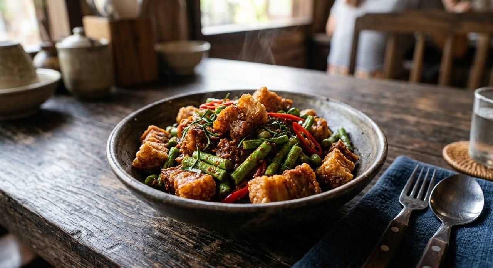

พริก means chilli, ขิง means ginger — the name says both, and the paste contains both. Crispy pork belly, long beans and hair-thin kaffir lime in a two-minute wok.

Most Thai dish names tell you what's in them. This one names the paste: พริกขิง — chilli-ginger. Dried chillies carry the heat and the colour; the ginger carries the scent, sharp and clean against the galangal's resin. It is the one paste where ginger isn't a substitution — it's the dish's whole identity.
And it was built for หมูกรอบ — crispy pork belly. The paste fries in oil until it darkens, the long beans go in for crunch, and the pork goes in last, a quick toss only, so the crackling survives the wok. That contrast — crisp fat, bright ginger, hot chilli — is what made the dish a noodle-shop and rice-shop staple.
Modern Thai cooks have a favourite variation: crumble a salted egg through it at the end. The yolk's salt-creaminess against the chilli-ginger paste is the current restaurant move, and Phol's version below documents it. The classic doesn't need it — but it isn't wrong either.
| Thai | English | Amount |
|---|---|---|
| The paste (พริกขิง) | ||
| พริกแห้ง | Dried chillies | 10 |
| กระเทียม | Garlic | 1 head |
| ข่า | Galangal, sliced | 6 slices |
| หอมแดง | Shallots | 6 |
| ตะไคร้ | Lemongrass, sliced | 1 stalk |
| รากผักชี | Coriander roots | 3 |
| พริกไทยเม็ด | Peppercorns | 6 |
| ขิง | Ginger, sliced — the dish's namesake | 6 slices |
| เกลือป่น | Salt | 1 tsp |
| The stir-fry | ||
| หมูกรอบ | Crispy pork belly | 300 g |
| ถั่วฝักยาว | Long beans, cut into lengths | 100 g |
| น้ำตาลปี๊บ | Palm sugar | 1 tbsp |
| น้ำปลา | Fish sauce | 1 tbsp |
| ใบมะกรูด (ซอยฝอย) | Kaffir lime leaves, sliced hair-thin | 5 |
| พริกแดง | Red chilli, sliced | 1 |
| น้ำมันพืช | Vegetable oil | 2 tbsp |
The restaurant version: 30 g red curry paste fried in oil, loosened with 2 tbsp water, seasoned with 2 tsp fish sauce and 2 tsp palm sugar, then 100 g long beans, 100 g crispy pork, 4 sliced kaffir lime leaves and a yellow chilli. At the very end, one salted egg, crumbled through and tossed once — the yolk breaks into the paste and the whole dish turns creamy-salty.
Note what changes: the shop shortcut swaps the pounded chilli-ginger paste for plain red curry paste. Faster, but the ginger — the name of the dish — goes missing. The salted egg brings its own argument to the plate.
The paste. The from-scratch chilli-ginger paste (Wongnai's) against plain red curry paste (Phol's shop-style version). The first honours the name; the second is the restaurant shortcut.
Ginger and galangal together. The Wongnai paste carries both — ginger for the sharp clean note, galangal for the resin. Recipes that drop the ginger are cooking a different dish.
The salted egg. Phol's version crumbles one in at the end; the classic omits it entirely. Both are published as ผัดพริกขิง — the egg is a modern addition, not a rule.
The pork. Crispy pork belly is the standard, but the dish also appears with lean pork and with prawns. The crackling version is the one worth making.
Sweetness. Palm sugar against plain sugar — the palm sugar's caramel note matters against the ginger's sharpness.
This recipe is translated from the following Thai-language sources. Where they disagree, we've said so.
1. Wongnai (gam.sali) — "วิธีทำ หมูกรอบผัดพริกขิง สูตรพริกแกงตำเอง" (23 Feb 2018 — the from-scratch chilli-ginger paste and full quantities) — wongnai.com
2. Phol Food Mafia — "Stir-Fried Pork Belly Crisp with Red Curry and Salted Egg (หมูกรอบผัดพริกขิงไข่เค็ม)" (the salted-egg variation) — pholfoodmafia.com